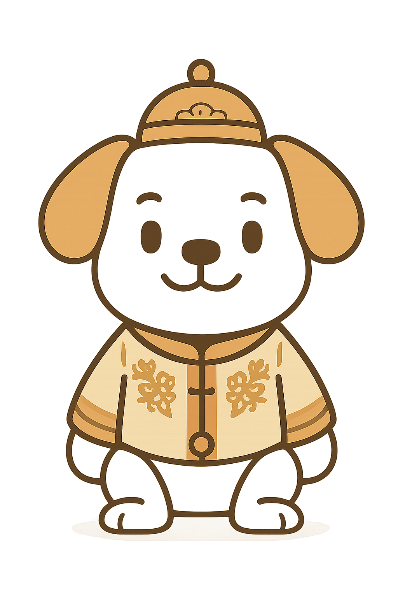

乌丙安思想数字研究中心
中心概况
机构简介
研究团队
历史沿革
学术研究
核心思想
文献整理
最新成果
数字人文
田野调查
学术动态
资料下载
搜索
<
>
最新学术动态
更多
记录非遗保护先行者的足迹——《乌丙安回忆录》书后
2025-05-20
守土有责，拓土有方：乌丙安学术研究谫论
2025-05-15
守护文化记忆——乌丙安学术生涯回顾
2025-05-08
“俗信”概念的确立与“妈祖信俗”申遗——乌丙安教授访谈录
2025-05-01
常用链接
中国民俗学会官网
中国非遗保护中心
辽宁大学民俗学系
辽河风
联系我们

AI馆员
×
您好！我是AI馆员，欢迎咨询乌丙安思想研究中心相关问题，我会尽力为您解答。
09:00
发送